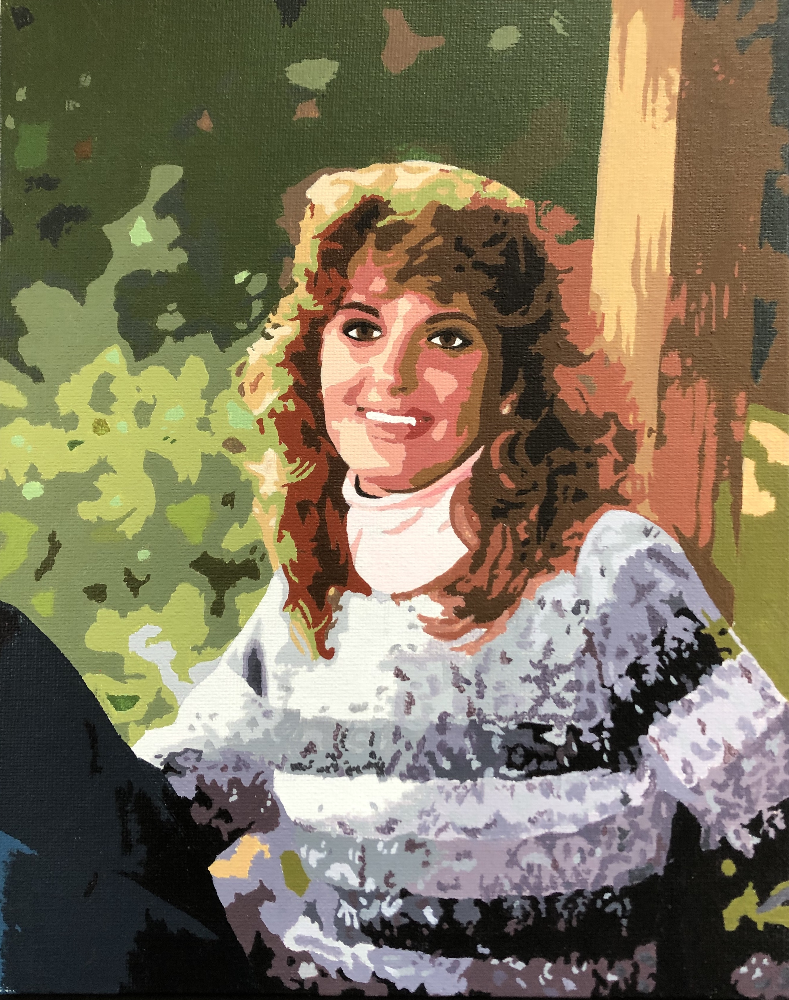
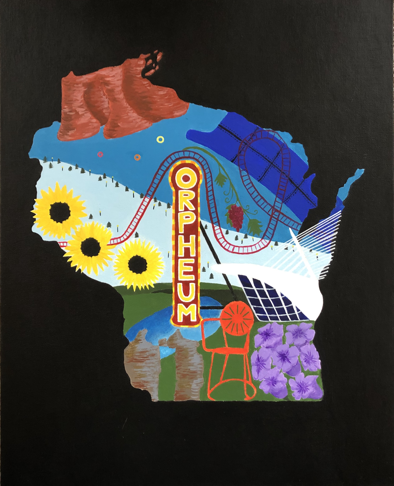
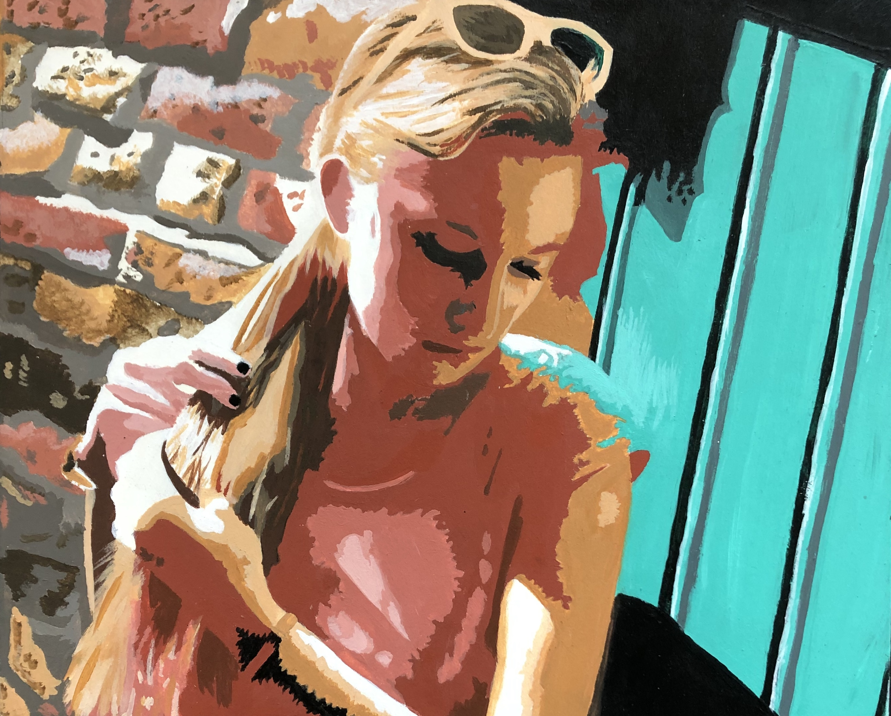

This is a self-portrait I completed during my senior year of high school. This piece was part of my Portfolio for AP Studio Art.

Mom, 2018, Acrylic Paint
This is a painting I made of my mom's senior picture. I made this painting during my own senior year, and it was part of my AP Studio Art portfolio.

Wisconsin, 2017, Acrylic Paint
This is a painting I created in my junior year of high school for Wisconsin's Visual Arts Classic art competition. The prompt was to represent the essence of Wisconsin.

Self-Portrait, 2017, Acrylic Paint
This self-portrait was created during my junior year of high school. This portrait hung in the Milwaukee Art Museum, as part of the Scholastic Art Awards.